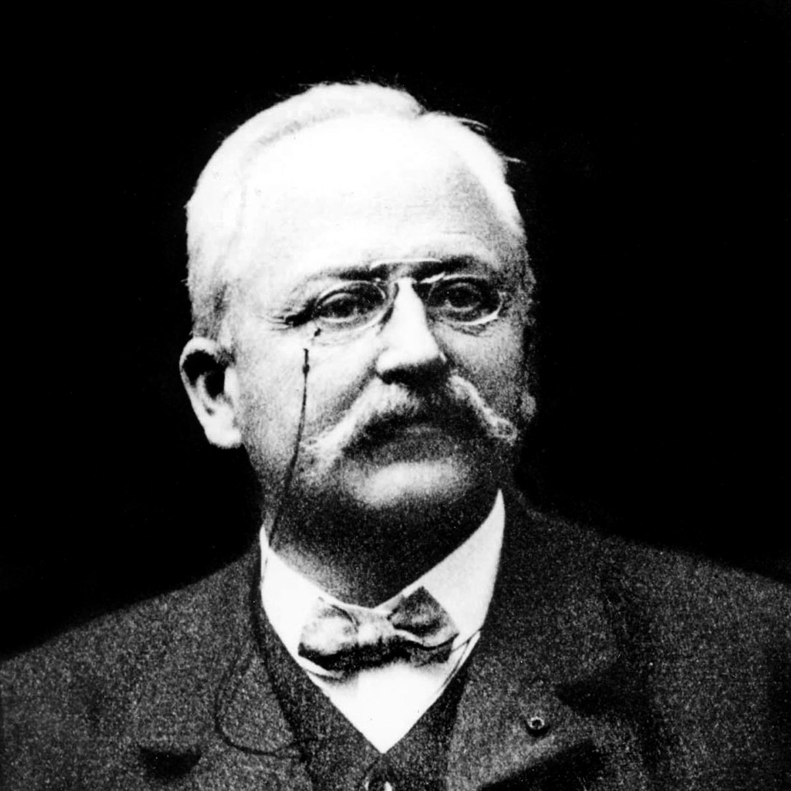

Fabricars

Armand Peugeot
En 1865, Armand y su primo Eugène se involucraron en la gestión de la empresa, entonces llamada Peugeot Frères Aînés. Incluyeron en 1882 la fabricación de bicicletas y exhibieron un triciclo impulsado por vapor en la Exposición Universal de París (1889). En 1892 el nombre de la empresa era Les Fils de Peugeot Frères. El 2 de abril de 1896, Armand creó su propia compañía llamada Société Anonyme des Automobiles Peugeot. Construyó una fábrica en Audincourt (Montbéliard), dedicada a la fabricación de automóviles con un motor de combustión interna. En 1889, la compañía Peugeot fabricó un automóvil de vapor diseñado por Serpollet, pero después, fabricó automóviles de estructuras tubulares con motor Daimler. En febrero de 1910, al no tener ningún heredero varón, acordó fusionar la empresa con la de Eugène. Cuando dejó la dirección de la empresa en 1913, Peugeot era el mayor fabricante de automóviles de Francia, con una producción de 10.000 coches al año.
